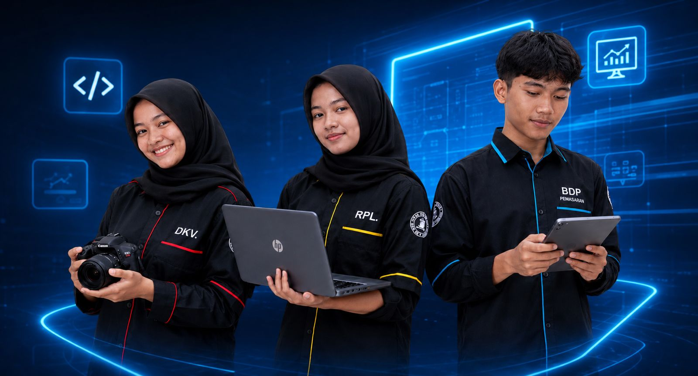
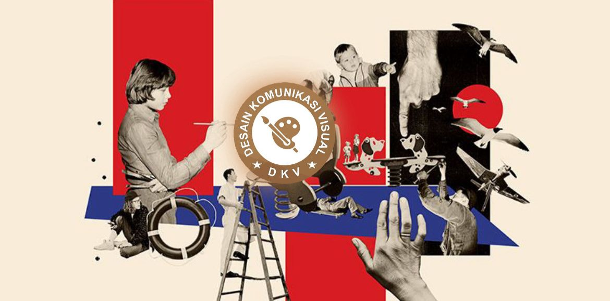
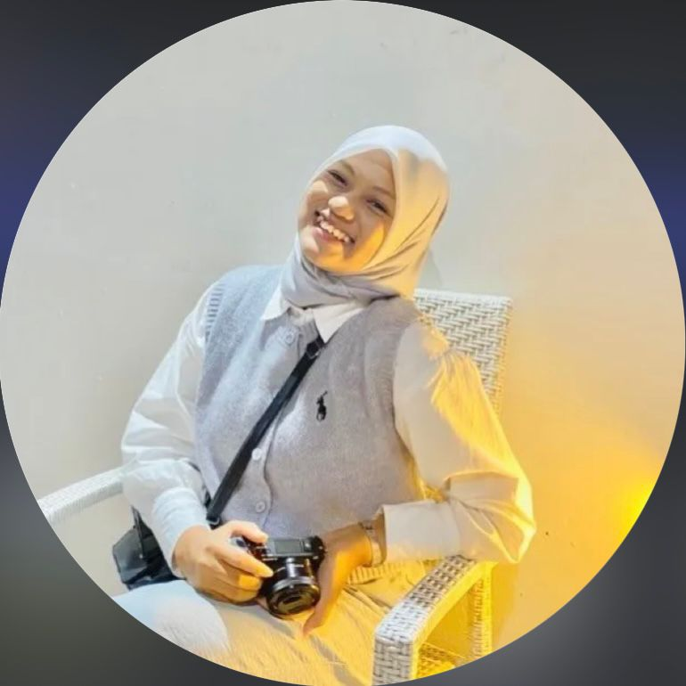
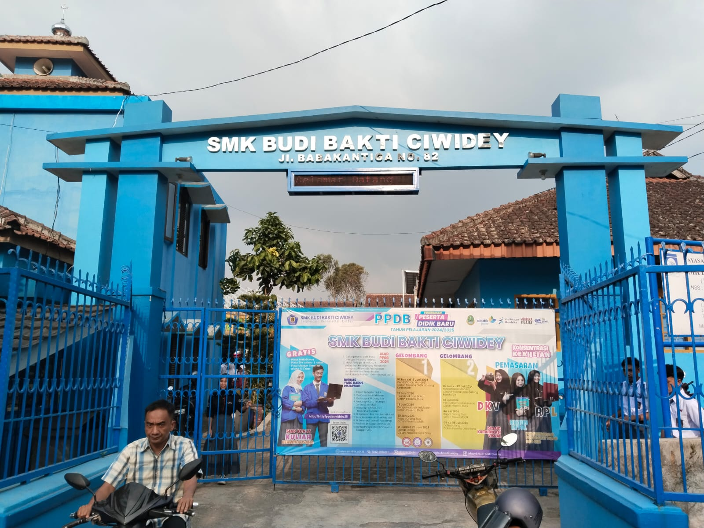

SMK Budi Bakti Ciwidey membantu siswa mengembangkan potensi, meningkatkan daya saing, dan mempersiapkan diri untuk siap menghadapi dunia industri modern.

Kami menyediakan jurusan relevan dengan dunia kerja, guru berpengalaman, kegiatan praktik aktif, dan dukungan pengembangan keterampilan serta kreativitas siswa.
Menguasai teknologi dan pengembangan digital modern.
Mengembangkan ide kreatif dan keterampilan desain.
Pembelajaran aktif berbasis praktik dan pengalaman nyata.
Mempersiapkan siswa lebih siap menghadapi dunia kerja.
Belajar coding, web development, dan teknologi digital.

Belajar desain grafis, branding, dan multimedia kreatif.
Belajar bisnis retail, pelayanan, dan pemasaran modern.
Lengkapi data diri pada formulir pendaftaran online.
Pilih program keahlian yang sesuai dengan minat kamu.
Tim kami akan memverifikasi data yang telah dikirim.
Selamat! Kamu resmi menjadi bagian dari keluarga besar BBC.
Terakreditasi BAN-S/M
Kerja Sama Industri
Prestasi Akademik & Non Akademik
Siswa Aktif & Alumni Berprestasi

"Selama belajar di RPL BBC, saya menyadari bahwa dunia teknologi memiliki peluang yang sangat luas, tidak hanya tentang coding tetapi juga berbagai bidang digital lainnya. Pembelajaran praktik dan pengalaman yang diberikan membuat saya lebih siap menghadapi dunia kerja."
Mulai perjalanan masa depanmu bersama SMK Budi Bakti Ciwidey sekarang.
Mulai Pendaftaran